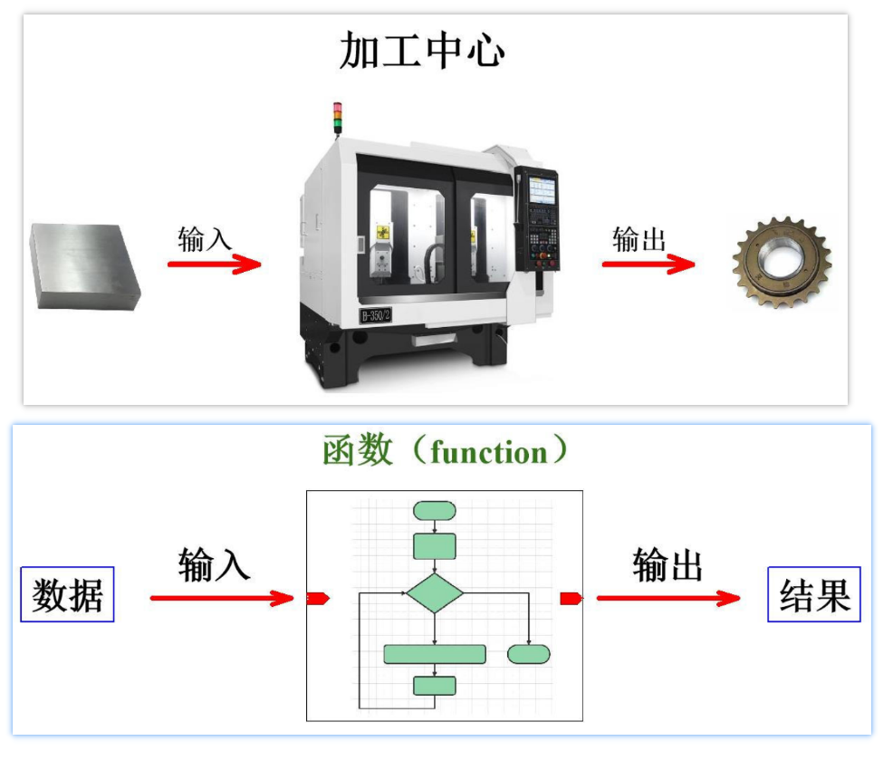
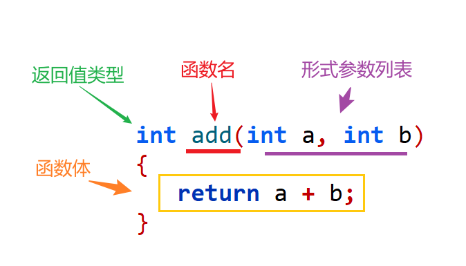
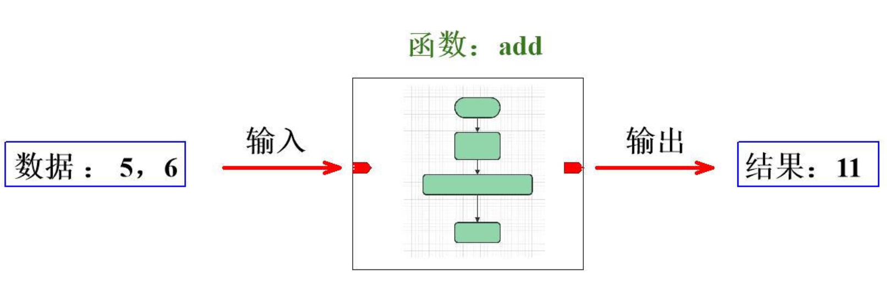

<!DOCTYPE lake>
<h1 data-lake-id="CqaA3" id="CqaA3"><strong><span class="lake-fontsize-14" data-lake-id="u7b9d786e" id="u7b9d786e" style="color: rgba(0, 0, 0, 0.75)">0&gt; 功能需求</span></strong></h1><p data-lake-id="uaa3b5ffb" id="uaa3b5ffb"><span class="lake-fontsize-12" data-lake-id="udc01c9f4" id="udc01c9f4">设计一个简易计算器，能够完成【+，-，*，/，%】5种运算；</span></p><hr/><h1 data-lake-id="Kp2C5" id="Kp2C5"><span data-lake-id="ua8f703be" id="ua8f703be">1&gt; 计算器-加法功能</span></h1><span class="yuque-card-unsupported">[codeblock]</span><p data-lake-id="u662e39c5" id="u662e39c5"><span class="lake-fontsize-12" data-lake-id="ub33bacd4" id="ub33bacd4">代码问题：缺乏复用性</span></p><p data-lake-id="ud4c38e35" id="ud4c38e35" style="text-indent: 2em"><span data-lake-id="ud5a6d3bc" id="ud5a6d3bc">加法逻辑直接硬编码在main()中，无法在其他地方复用</span></p><p data-lake-id="u0b798ecd" id="u0b798ecd" style="text-indent: 2em"><span data-lake-id="u0f51fd50" id="u0f51fd50">如果程序其他部分也需要加法运算，必须重复编写 num1 + num2</span></p><hr/><p data-lake-id="u75390240" id="u75390240"><span class="lake-fontsize-12" data-lake-id="u0221b618" id="u0221b618">封装函数：</span></p><span class="yuque-card-unsupported">[codeblock]</span><p data-lake-id="u94661646" id="u94661646"><span class="lake-fontsize-12" data-lake-id="ub65ca7b2" id="ub65ca7b2">优化后的优点：遵循"单一职责原则"（一个函数只做一件事）</span></p><p data-lake-id="u2c378966" id="u2c378966" style="text-indent: 2em"><span data-lake-id="u2c8ac3aa" id="u2c8ac3aa">加法逻辑只写一次，可以在程序中多次调用</span></p><p data-lake-id="u4de2d5a4" id="u4de2d5a4" style="text-indent: 2em"><span data-lake-id="u0b9ed62e" id="u0b9ed62e">例如，如果需要在程序中多处做加法运算，只需调用 add() 函数，而不需要重复写 a + b；</span></p><hr/><h1 data-lake-id="vNKTl" id="vNKTl"><span data-lake-id="u18d438f2" id="u18d438f2">2&gt; 函数基本概念</span></h1><p data-lake-id="udeb6ab52" id="udeb6ab52"><strong><span class="lake-fontsize-14" data-lake-id="udc39ce20" id="udc39ce20" style="color: rgba(0, 0, 0, 0.75)">函数（function）</span></strong><span class="lake-fontsize-12" data-lake-id="u3bbd2ab6" id="u3bbd2ab6" style="color: rgba(0, 0, 0, 0.75)">：编程中封装的一段具有特定功能的代码；</span></p><hr/><h1 data-lake-id="MPUkX" id="MPUkX"><span data-lake-id="uaa530ee4" id="uaa530ee4">3&gt; 函数定义（</span><span data-lake-id="ucbd9778b" id="ucbd9778b" style="color: rgb(51, 51, 51)">Definition</span><span data-lake-id="uc2e65949" id="uc2e65949">）</span></h1><span class="yuque-card-unsupported">[codeblock]</span><p data-lake-id="uba7176c0" id="uba7176c0"></p><p data-lake-id="u2fa8ebf4" id="u2fa8ebf4"></p><hr/><h1 data-lake-id="TtczJ" id="TtczJ"><span data-lake-id="ue8640934" id="ue8640934">🐻</span><span data-lake-id="u71fe4d37" id="u71fe4d37">实践练习：</span></h1><p data-lake-id="ued6ec9c2" id="ued6ec9c2"><span data-lake-id="u6437640b" id="u6437640b"> 完善</span><span class="lake-fontsize-12" data-lake-id="ub4250521" id="ub4250521">简易计算器，-，* /，%等功能</span></p>